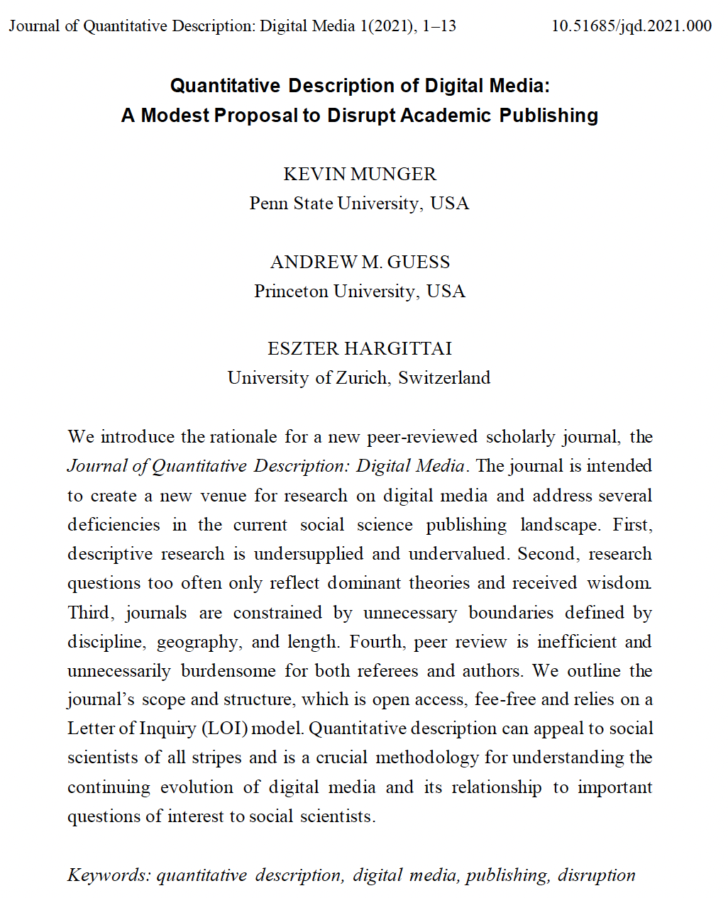
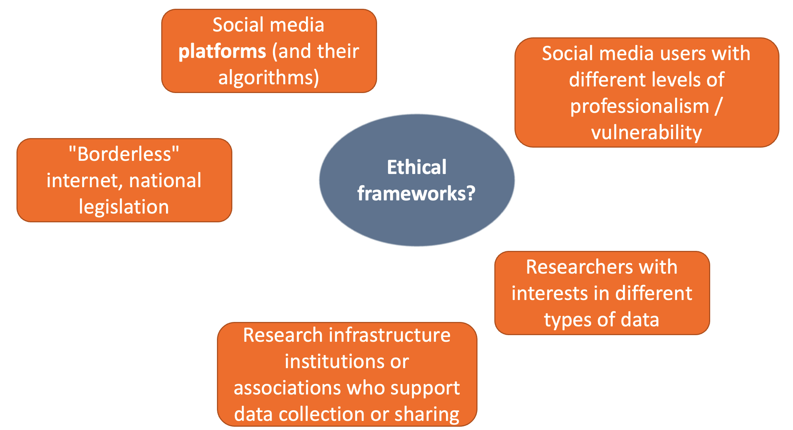
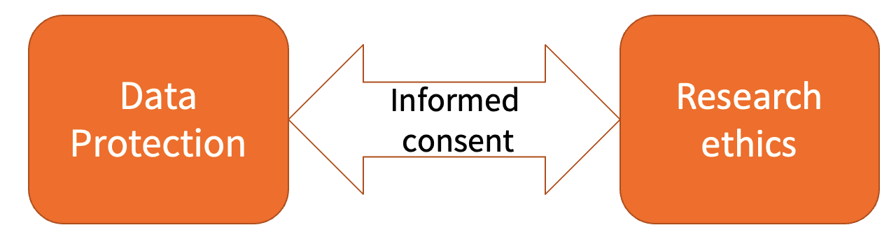
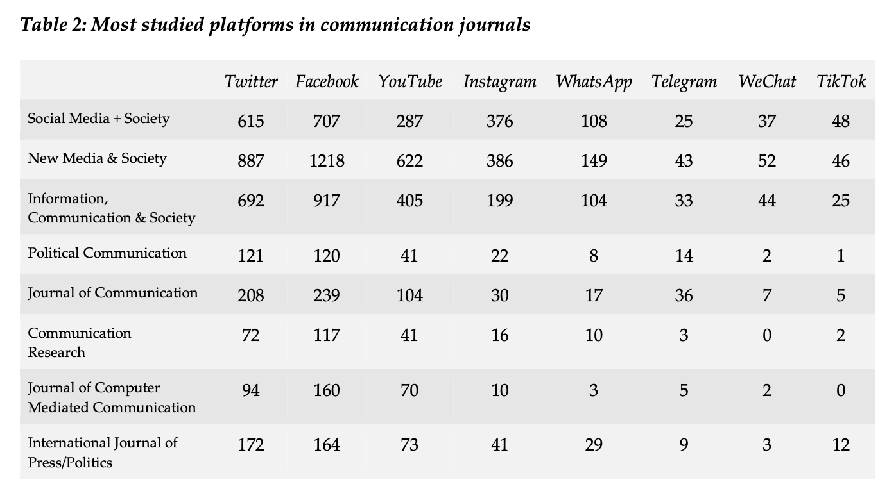
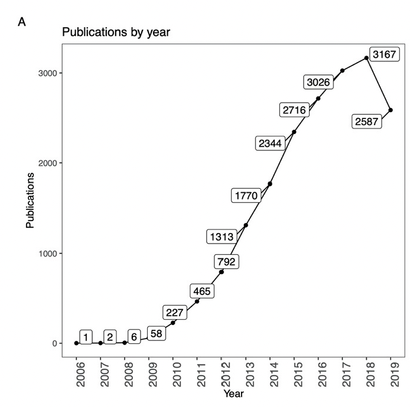
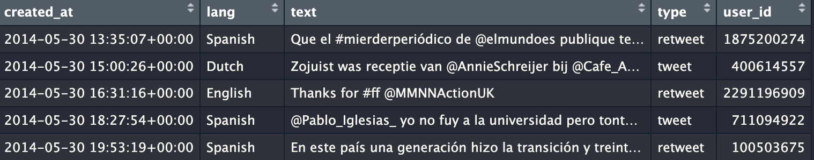
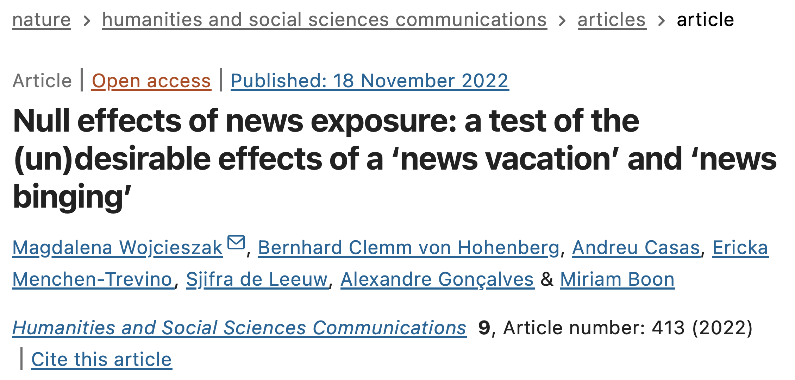

| Seminar dates and topics | ||
| Date | Topics | Required reading |
|---|---|---|
14 February 2024 |
|
Lazer, D., & Radford, J. (2017). Data ex Machina: Introduction to Big Data. Annual Review of Sociology, 43(1), 19–39. |
28 February 2024 |
|
Fiesler, C., & Proferes, N. (2018). ‘Participant’ Perceptions of Twitter Research Ethics. Social Media + Society, 4(1). |
13 March 2024 |
|
Guess, A. M., Barberá, P., Munzert, S., & Yang, J. (2021). The consequences of online partisan media. PNAS, 118(14). |
20 March 2024 |
|
Bonikowski, B., Luo, Y., & Stuhler, O. (2022). Politics as Usual? Measuring Populism, Nationalism, and Authoritarianism in U.S. Presidential Campaigns (1952–2020) with Neural Language Models. Sociological Methods & Research, 51(4), 1721–1787. Schwemmer, C., & Wieczorek, O. (2020). The Methodological Divide of Sociology: Evidence from Two Decades of Journal Publications. Sociology, 54(1), 3–21. |
10 April 2024 |
|
Gilardi, F., Alizadeh, M., & Kubli, M. (2023). ChatGPT outperforms crowd workers for text-annotation tasks. PNAS, 120(30). Reiss, M. V. (2023). Testing the Reliability of ChatGPT for Text Annotation and Classification: A Cautionary Remark. arXiv Preprint. |
17 April 2024 |
|
Chan, C., Schatto-Eckrodt, T., & Gruber, J. B. (2024). What makes computational communication science (ir)reproducible? Working Paper. Nyhan, B., Settle, J., Thorson, E., Wojcieszak, M., Barberá, P., et al. (2023). Like-minded sources on Facebook are prevalent but not polarizing. Nature, 620(7972), 137–144. |
22 May 2024 |
|
Bauer, P. C., & Landesvatter, C. (2023). Writing a reproducible paper with RStudio and Quarto. OSF Preprint. |
Research Ethics and Web Data
University of Mannheim & GESIS – Leibniz Institute for the Social Sciences
2023-02-28
Agenda for today
Recap
Warmup session in R
Research ethics and web data
R: First exploration of digital behavioral data
1. Recap
What are digital behavioral data?
“Records of activity (trace data) undertaken through an online information system (thus, digital)” (Howison et al., 2011: 769) that can be collected from a multitude of technical systems, such as websites, social media platforms, smartphone apps, or sensors.
Howison, J., Wiggins, A., & Crowston, K. (2011). Validity issues in the use of social network analysis with digital trace data. Journal of the Association for Information Systems, 12(12), 767–797, 769.
Stier, S., Breuer, J., Siegers, P., & Thorson, K. (2020). Integrating Survey Data and Digital Trace Data: Key Issues in Developing an Emerging Field. Social Science Computer Review, 38(5), 503–516, 504.
What is computational social science?
Computational social science is an interdisciplinary field that advances theories of human behavior by applying computational techniques to large datasets from social media sites, the Internet, or other digitized archives such as administrative records. Our definition forefronts sociological theory because we believe the future of the field within sociology depends not only on novel data sources and methods, but also on its capacity to produce new theories of human behavior or elaborate on existing explanations of the social world.
Edelmann, A., Wolff, T., Montagne, D., & Bail, C. A. (2020). Computational Social Science and Sociology. Annual Review of Sociology, 46(1), 61–81: 62.
The role of theory and existing knowledge
“Our definition forefronts sociological theory because we believe the future of the field within sociology depends not only on novel data sources and methods, but also on its capacity to produce new theories of human behavior or elaborate on existing explanations of the social world.” (Edelmann et al. 2020: 62)
Explanation vs. description I

Munger, K., Guess, A. M., & Hargittai, E. (2021). Quantitative Description of Digital Media: A Modest Proposal to Disrupt Academic Publishing. Journal of Quantitative Description: Digital Media, 1.
“First and foremost, we respond to an undersupply of quantitative descriptive research in social science. Causal research that asks the question why has largely taken the place of descriptive research that asks the question what. Gerring (2012) diagnosed a general tendency to dismiss ‘Mere Description’ as a ‘mundane task … of little intrinsic scientific value,’ advocating instead that it be taken seriously as part of the general social scientific method.
We firmly agree. However, critique alone does not change the material conditions and incentives of practicing academics; we see this journal as a practical step towards raising the status of description as a method.” (Munger, Guess, and Hargittai 2021: 3-4)
Explanation vs. description II
Munger, K., Guess, A. M., & Hargittai, E. (2021). Quantitative Description of Digital Media: A Modest Proposal to Disrupt Academic Publishing. Journal of Quantitative Description: Digital Media, 1.
Second, rather than define our new venue in terms of existing disciplinary boundaries, we instead embrace a topical focus on digital media, broadly construed. We argue that the centrality and dynamism of digital media — information and communication technologies, including social media, that increasingly structure the way people interact with the world — necessitates increased scholarly energy devoted to sustained, continuous, quantitative description. […]
Today, there are more hours of video uploaded to YouTube every day than were broadcast in the 1950s U.S. in a year. The daily content of Twitter is different (and different in unpredictable ways) than it was the day before.” (Munger, Guess, and Hargittai 2021: 3-4)
Examples of novel sociotechnical phenomena
- Harmful online communication
- E.g., misinformation and deception
- E.g., violent language, harassment, racism
- Algorithmic influence, bias and discrimination
- Filter bubbles and echo chambers
- Social bots
- Virality of online content and memes
- Online inequalities
2. Warmup session in R
Styleguide
Guidance for coding in R: https://style.tidyverse.org/index.html
3. Research ethics and web data
Research ethics?
Research ethics
Moral principles and actions guiding and shaping research
- from inception to completion,
- through dissemination and sharing of findings,
- including archiving and future use.
Research ethics in the social sciences
- Initially “patient protection” model of medical research
- Today broader scope including consideration of benefits, risks and harms to all persons connected with the research
- Including social responsibilities of researchers
Who are the relevant actors?

Data protection
- Data protection
- Part of fundamental right to privacy (or “informational freedom”)
- “Privacy is a personal condition of life characterised by seclusion from, and therefore absence of acquaintance by, the public” (Neethling 2005: 233)
- Prevention of unwanted disclosure of personal information or the misuse of such information
Data protection: legal foundations
- Prevention of unwanted disclosure of personal information or the misuse of such information
- Core of data protection
- Legal framework in the European Union
- Charter of Fundamental Rights of the EU (Art. 8)
- General Data Protection Regulation (GDPR)
- National and sub-national data protection acts
- Specialized laws
Informed consent
- Bridge between data protection and research ethics
- Informed consent means for example:
- information
- transparency
- minimal requirement \(\rightarrow\) chance not to consent
- Status quo in social media research: lack of informed consent
Our two required readings
- Guiding questions:
- Describe what problem or question these papers address and the main contributions that they make towards a solution or answer.
- Reflect on the main strengths and weaknesses of these papers.
- What are the concepts, assumed social mechanisms and operationalizations used in the papers?
- What are the data in use? How are the data analyzed? Does this seem appropriate?
- How convincing do you find the arguments presented by the authors? Are the conclusions backed up by the empirical results?
- Do you see any ethical concerns?
- If applicable, are there commonalities or differences between the two papers?Are all of these researchers bad people?

Lukito, J., et al. (2023). The State of Digital Media Data Research, 2023. Media and Democracy Data Cooperative.

Yu, J., & Muñoz-Justicia, J. (2020). A Bibliometric Overview of Twitter-Related Studies Indexed in Web of Science. Future Internet, 12(5), 91.
Legitimate academic interests
There are legitimate academic interests for studying online platforms!
- Understanding the impact of digital media on society and democracy
- Keeping online platforms accountable
- Mitigating “systemic risks” (see https://digital-strategy.ec.europa.eu/en/consultations/guidelines-providers-very-large-online-platforms-and-very-large-online-search-engines-mitigation)
- Preserving historical material
- and more reasons…
What can we do to ensure the integrity of our CSS research?
- Keep the DBD safe and protected
- Analyzing at the group-/variable-level, avoid unnecessary “forensic analysis” of individual data patterns / users
- Not publishing/printing any personal information in a paper/thesis
Collecting digital behavioral data
But first, we need to get some DBD for your research
- What research questions would you like to answer with DBD?
- What DBD would you need?
How to collect web data
How does it look like in R?
APIs

Web scraping
library(rvest)
url <- "https://rvest.tidyverse.org/articles/starwars.html"
html <- read_html(url)
section <- html |> html_elements("section")
head(section, 5){xml_nodeset (5)}
[1] <section><h2 data-id="1">\nThe Phantom Menace\n</h2>\n<p>\nReleased: 1999 ...
[2] <section><h2 data-id="2">\nAttack of the Clones\n</h2>\n<p>\nReleased: 20 ...
[3] <section><h2 data-id="3">\nRevenge of the Sith\n</h2>\n<p>\nReleased: 200 ...
[4] <section><h2 data-id="4">\nA New Hope\n</h2>\n<p>\nReleased: 1977-05-25\n ...
[5] <section><h2 data-id="5">\nThe Empire Strikes Back\n</h2>\n<p>\nReleased: ...Elon, we have a problem
https://aoir.org/facebook-shuts-the-gate-after-the-horse-has-bolted/ https://www.forbes.com/sites/antoniopequenoiv/2023/06/30/these-popular-third-party-reddit-apps-will-disappear-saturday-as-api-changes-take-effect-despite-weeks-of-user-protest/ https://www.theguardian.com/technology/2023/feb/07/techscape-elon-musk-twitter-api
How to (still) collect web data
4. First exploration of digital behavioral data
The data we will be using today
Wojcieszak, M., Clemm Von Hohenberg, B., Casas, A., Menchen-Trevino, E., De Leeuw, S., Gonçalves, A., & Boon, M. (2022). Null effects of news exposure: A test of the (un)desirable effects of a ‘news vacation’ and ‘news binging’. Humanities and Social Sciences Communications, 9(1), 413.
A toy browsing data set from our OSF repository. It is based on a real data set collected from a US sample in 2019, but reduced to fewer participants and slightly modified for reasons of anonymity (n_subjects = 100; n_visits = 2 million).
Back to coding
- Go back to file 2_session_two.R in https://sebastianstier.com/ma_css24/material.html
Thank you for your attention! See you on March 13th
References

Social networking sites
“We define social network sites as web-based services that allow individuals to
The nature and nomenclature of these connections may vary from site to site.” (boyd and Ellison 2007: 211)
\(\rightarrow\) widely differing platform affordances